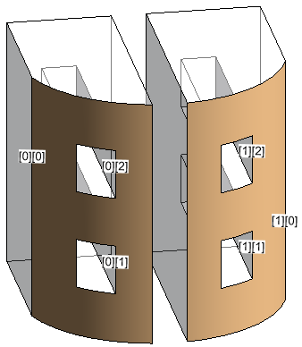
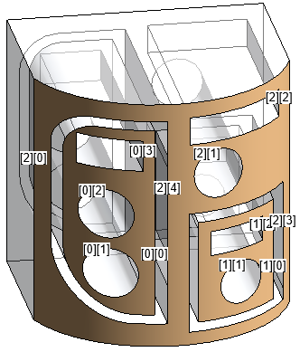

Very short notice on the Ask Me Anything session taking place later today, and a vastly enhanced method for sorting curve loops:
Before getting technical, a personal note:
I celebrated my covid coronation last week.
I suffered very mildly. My partner had a strong headache and took a positive test. Next day, I felt slightly dizzy with tired and hurting bones and eyes in the evening, followed by a scratchy throat, slight fever, ache in the legs and back, exhaustion, higher pulse. I slept more, stopped drinking coffee for five days and otherwise kept to my normal everyday routines and work. Now, all is well and I count myself lucky.
The annual Revit Inside the Factory Ask Me Anything session is taking place later today, May the Fourth, at 11:30am PT / 14:30pm ET / 19:30 CET.
Questions about the future of Revit? Join for the Public Roadmap and to ask me anything.
Stefano Menci picked up an old solution for sorting curve loops and expanded it to handle non-planar faces by transforming the 3D loop coordinates from the curved face XYZ space to its 2D UV parametrisation space.
The original question was raised in the Revit API discussion forum thread on is the first edge loop still the outer loop?, solved by Richard RPThomas108 Thomas and edited by The Building Coder in two posts:
Here is a summary of the new conversation with Stefano and Richard:
Question: I tried using SortCurveLoops on the face shown below, expecting to get one list with the outer loop and one list with the 3 inner loops, but I got one list containing one list containing two loops.
The article
on ExporterIfcUtils curve loop sort and validate also
mentions co-planar loops in the description of ValidateCurveLoops.
Perhaps the problem I had is caused by the fact that also SortCurveLoops only works with co-planar loops?
Here implemented code to find the outer loop and all the inner loops. It finds the outer loop by cycling through all the tessellated points of all the loop edges and finding the one with the lowest U.
I did a few tests, and it seems to work well.
I am surprised to see that my short function does the same job as other long functions shown in the previous posts.
I am learning LINQ, so I spent some time to get this to work with LINQ, but my previous version using 3 nested foreach was very simple to do.
Am I doing something wrong?
Am I doing something different from what this post describes?
Answer: If it works it works.
One thing I considered at the time was resolution of the points you get from tessellate, i.e., if you have a curve does one of the points on that curve (from tessellate) describe the actual minimum location of that curve (for some curves that is unlikely to be the case). Since there is the parametric curve and the actual points are obtained from that. Here is an exaggerated example of what I mean by that:
Depends also on rotation of UV axis on face in comparison to those points.
For the most part I don't think such a thing would cause issues unless you set out to prove it didn't work, i.e., in a real-world scenario, there is no arrangement you would likely have that would be affected by such things. So it's a question of comfort level through testing, really.
I think it has also since been noted that there are patterns in how the faces are constructed that gives away the actual outer loop of a face.
Was also at the time dealing with PlanarFaces only so also should note that for those you can use Face.IsInside with solid creation utils, this makes things far more straightforward than my original above code and perhaps more reliable i.e. extrude each loop and check points from each within faces of one another to find other loop.
Response: The documentation of Curve.Tessellate says both the tolerance is slightly larger than 1/16" and is defined internally by Revit to be adequate for display purposes.
Tessellation in computer graphics is often adjusted to the zoom level or to the desired rendering quality. In other words, if "you can see" that one curve is below the other curve, then the tessellation can see it too. But I don't know if Curve.Tessellation is the same tessellation used for the graphics card. We could also talk about the definition of "you can see", but let's not add speculation to the speculation :-)
Answer: You say above you got one list with one list with two loops...
If you are unsure which loop is which, or, in any case, I would highly recommend implementing some little debugging utility functions to display those loops graphically, or it will be very hard to understand what you are getting.
I implemented such stuff in several blog posts using the Creator class:
Response: Thank you for the list of articles, it will be very helpful in the near future!
The article
on the curved wall elevation profile seems
to mention the same problem that I found in SortCurveLoops.
I did another test with SortCurveLoops, and indeed it seems to be working reliably only with planar faces.
With curved faces, it usually does nothing.
Only in one curved face I was able to get 2 out of the 4 loops, but it usually gets none.
Here are two masses:
The first one has only planar faces, the second one is a copy of the first one with a void that creates a curved face.
The texts show the first line of each loop with the loop indexes as returned by SortCurveLoops. I like to create texts at 1/3 of each line, so it visually gives an idea of the direction of the loop. Just looking at the texts you immediately understand which loops are clockwise and which ones are counterclockwise.
I have the feeling that SortCurveLoops projects the curves to a plane, then crunches the numbers on the projected curves. If this is the case, then it will never be reliable on curved faces. The correct approach would be to work on the UV coordinates.
Here is the code I used:
var loops = face.GetEdgesAsCurveLoops(); var sortedLoops = ExporterIFCUtils.SortCurveLoops( loops ); for( var i = 0; i < sortedLoops.Count; i++ ) { for( var j = 0; j < sortedLoops[ i ].Count; j++ ) { CreateTextNote( $"[{i}][{j}]", sortedLoops[ i ][ j ].First().Evaluate( 0.33, true ), doc ); } } TextNote CreateTextNote( string text, XYZ origin, Document doc ) { var options = new TextNoteOptions { HorizontalAlignment = HorizontalTextAlignment.Center, VerticalAlignment = VerticalTextAlignment.Middle, TypeId = doc.GetDefaultElementTypeId( ElementTypeGroup.TextNoteType ) }; return TextNote.Create( doc, doc.ActiveView.Id, origin, text, options ); }
Answer: Below is another issue I now recall that you might want to consider:
When face is disjunct (single solid made of two or more parts), you need to be able to identify both outer loops of the face, not just the outer loop to the furthest left or right.
Solved previously for this purpose.
Response: I created a version of SortCurveLoops that converts the XYZ points to UV points, then works on planar loops.
I only tested it with a few cases where ExporterIFCUtils.SortCurveLoops fails, and it works well.
I will start using it and see if it breaks in the next weeks.
My function takes in input a Face instead of a list of CurveLoops, because all the curves are tessellated and converted to UV. The Face is used for both finding the CurveLoops and converting to UV.
If there are outer loops contained in other outer loops (like in the third snapshot), the innermost loops are first in the resulting list.
Planar
Curved
Disjunct
Here is the model I used for testing, sort_multiple_edge_loops.rvt. As you can tell, I'm learning how Revit works; I'm sure there are better ways to create faces with multiple nested loops.
Answer: Wow! Fantastic job! This is real research, with real test cases. I love it. Thank you very much for your work and important results.
Thank you also for your pull request to The Building Coder Samples.
I integrated it into release 2021.0.150.25. Here is the diff to the previous release.
Here is the code:
private static List<List<CurveLoop>> SortCurveLoops( Face face ) { var allLoops = face.GetEdgesAsCurveLoops().Select( loop => new CurveLoopUV( loop, face ) ).ToList(); var outerLoops = allLoops.Where( loop => loop.IsCounterclockwise ).ToList(); var innerLoops = allLoops.Where( loop => !outerLoops.Contains( loop ) ).ToList(); // sort outerLoops putting last the ones that are outside all the preceding loops bool somethingHasChanged; do { somethingHasChanged = false; for( var i = 1; i < outerLoops.Count(); i++ ) { var point = outerLoops[ i ].StartPointUV; var loop = outerLoops[ i - 1 ]; if( loop.IsPointInside( point ) is CurveLoopUV.PointLocation.Inside ) { var tmp = outerLoops[ i ]; outerLoops[ i ] = outerLoops[ i - 1 ]; outerLoops[ i - 1 ] = tmp; somethingHasChanged = true; } } } while( somethingHasChanged ); var result = new List<List<CurveLoop>>(); foreach( var outerLoop in outerLoops ) { var list = new List<CurveLoop> { outerLoop.Loop3d }; for( var i = innerLoops.Count - 1; i >= 0; i-- ) { var innerLoop = innerLoops[ i ]; if( outerLoops.Count == 1 // skip testing when the inner loop is inside the outer loop || outerLoop.IsPointInside( innerLoop.StartPointUV ) == CurveLoopUV.PointLocation.Inside ) { list.Add( innerLoop.Loop3d ); innerLoops.RemoveAt( i ); } } result.Add( list ); } return result; }
This is the class CurveLoopUV that converts the curves from 3D XYZ to UV, then to planar XYZ.
class CurveLoopUV : IEnumerable<Curve> { private const double Epsilon = 0.000001; public enum PointLocation { Outside, OnTheEdge, Inside, } public CurveLoop Loop3d { get; } private readonly CurveLoop _loop2d; public readonly double MinX, MaxX, MinY, MaxY; public CurveLoopUV( CurveLoop curveLoop, Face face ) { Loop3d = curveLoop; _loop2d = new CurveLoop(); var points3d = Loop3d.SelectMany( curve => curve.Tessellate().Skip( 1 ) ); var pointsUv = points3d.Select( point3d => face.Project( point3d ).UVPoint ); var points2d = pointsUv.Select( pointUv => new XYZ( pointUv.U, pointUv.V, 0 ) ).ToList(); MinX = MinY = 1.0e100; MaxX = MaxY = -1.0e100; var nPoints = points2d.Count; for( var i = 0; i < nPoints; i++ ) { var p1 = points2d[ i ]; var p2 = points2d[ (i + 1) % nPoints ]; _loop2d.Append( Line.CreateBound( p1, p2 ) ); if( p1.X < MinX ) MinX = p1.X; if( p1.Y < MinY ) MinY = p1.Y; if( p1.X > MaxX ) MaxX = p1.X; if( p1.Y > MaxY ) MaxY = p1.Y; } } public PointLocation IsPointInside( XYZ point ) { // Check if the point is outside of the loop bounding box if( point.X - Epsilon < MinX || point.X + Epsilon > MaxX || point.Y - Epsilon < MinY || point.Y + Epsilon > MaxY ) return PointLocation.Outside; // Check if the point is on the loop if( _loop2d.Any( curve => curve.Distance( point ) < Epsilon ) ) return PointLocation.OnTheEdge; // Create a Line that starts from point and ends outside of the loop. Adding non-integer // values decreases the chances of special cases, where line passes through loop // endpoints. These cases can still happen and are managed by the function, but using a // different offset costs nothing and may help staying out of trouble. (The trouble // could show up when a point doesn't really lay on a line, or two points are not exactly // the identical. Using Epsilon helps a little, but, again, when the distance between two // points is exactly Epsilon, here comes the trouble.) var line = Line.CreateBound( point, new XYZ( MaxX + 0.1234, MaxY + 0.3456, 0 ) ); // Count the number of intersections between the line just created and the loop. // If the number of intersection is odd, then point is inside the loop. // Discard the solutions where the intersection is the edge start point, because these // intersections have already been counted when intersecting the end point of the // previous segments. var nIntersections = _loop2d .Where( edge => edge.Intersect( line ) == SetComparisonResult.Overlap ) .Count( edge => line.Distance( edge.GetEndPoint( 0 ) ) > Epsilon ); return nIntersections % 2 == 1 ? PointLocation.Inside : PointLocation.Outside; } public bool IsCounterclockwise => _loop2d.IsCounterclockwise( XYZ.BasisZ ); public XYZ StartPointUV => _loop2d.First().GetEndPoint( 0 ); public IEnumerator<Curve> GetEnumerator() => _loop2d.GetEnumerator(); IEnumerator IEnumerable.GetEnumerator() => GetEnumerator(); }
Very many thanks to Stefano for his careful research and brilliant solution!